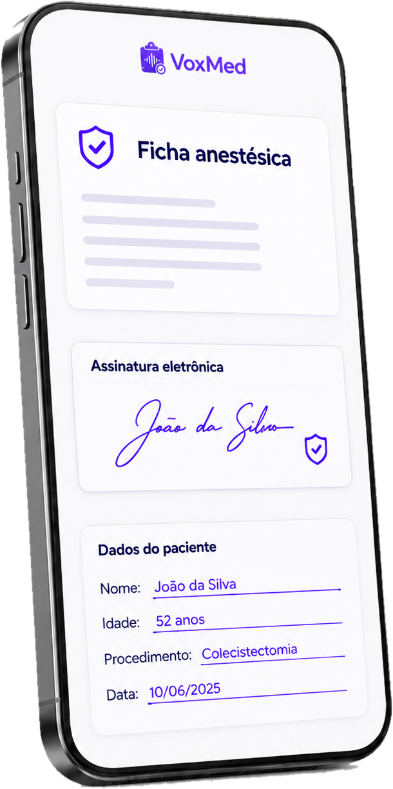
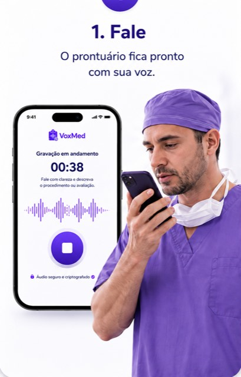
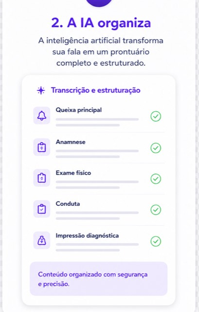
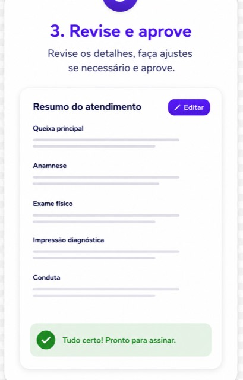
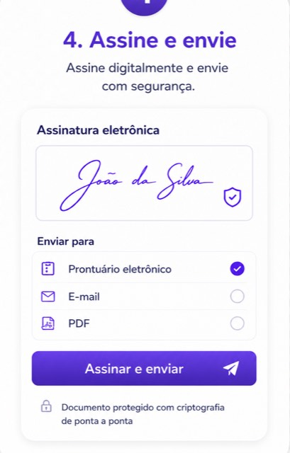
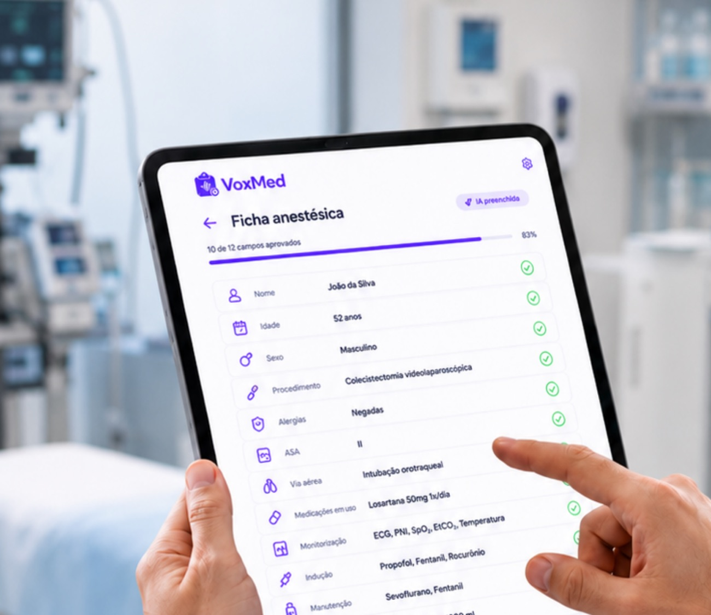
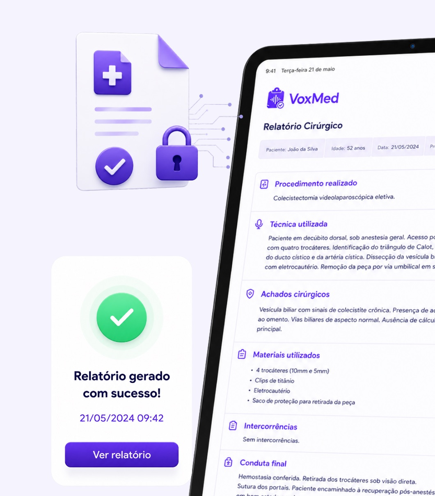
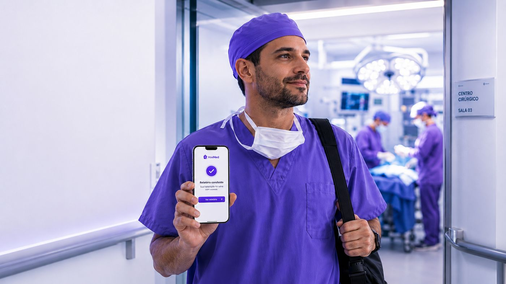
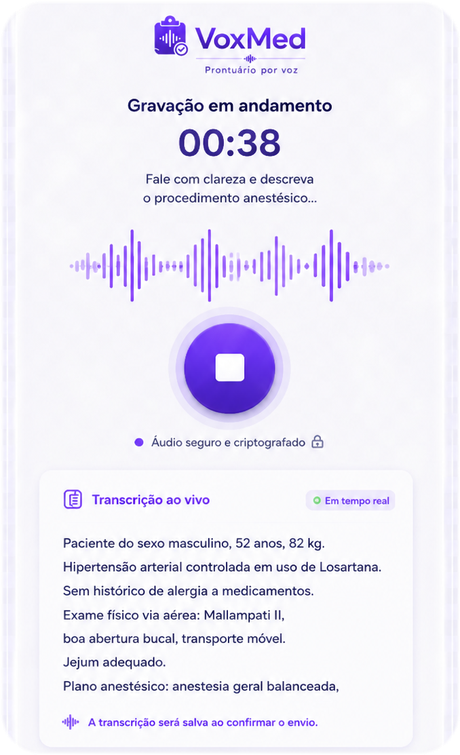
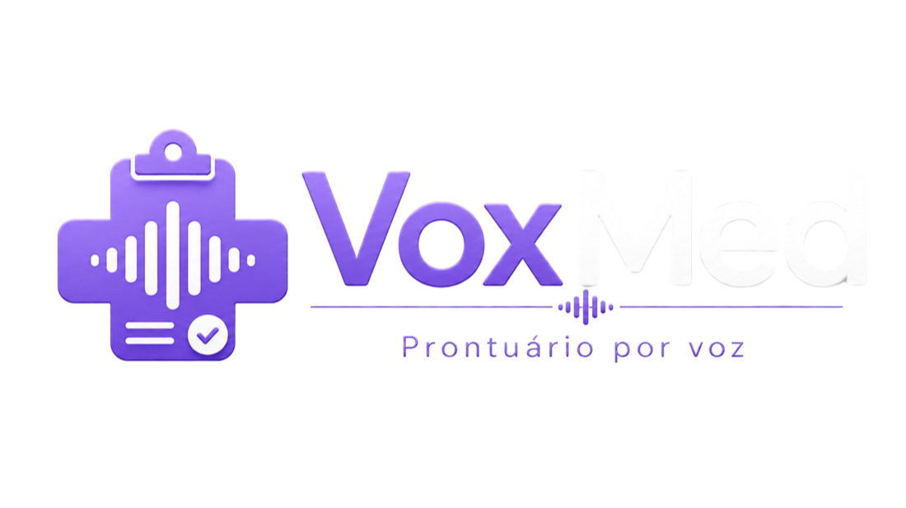

O caso acabou às 19h.
Você saiu às 20h40.
A hora que a papelada rouba não volta — e ela sai sempre da sua conta: do jantar, do trânsito mais leve, do seu descanso entre plantões.
A papelada é a única parte do seu plantão que dá para devolver. Você dita durante o caso, o VoxMed monta o documento — ficha anestésica ou relatório de cirurgia — e para você sobra só o que sempre deveria ter sido seu papel: conferir e assinar.
Acesso antecipado · nada é cobrado nos 30 dias · cancele quando quiser

A parte da medicina que ninguém aguenta mais não é a medicina. É o que vem depois dela.
A hora que a papelada rouba não volta — e ela sai sempre da sua conta: do jantar, do trânsito mais leve, do seu descanso entre plantões.
Anotar na prancheta durante o ato e redesenhar tudo depois é fazer o mesmo trabalho duas vezes — todos os dias, em todos os casos.
Campo em branco, letra que o auditor não leu, código que faltou: o convênio não paga o que não entende — e quem corre atrás é você.
Documentar de memória, horas depois, é um risco jurídico que você carrega sozinho. O registro completo, feito na hora, é a sua defesa.
O VoxMed não pede que você digite mais rápido. Ele elimina a digitação. Você narra o caso enquanto ele acontece — como já faz de cabeça — e o documento se monta sozinho, esperando só a sua conferência.
Quatro passos. Nenhum deles é “digitar”.

Dite o caso como você já fala — a avaliação, os vitais, a narrativa. Funciona até sem internet, e o áudio nunca sai do aparelho.

O que você falou vira campos do documento. O que você não disse fica em branco — a IA nunca inventa.

Cada campo espera a sua aprovação. Campo crítico pendente bloqueia a assinatura: nada sai sem passar pelos seus olhos.

Biometria do seu iPhone. Depois: imprima para o prontuário, gere o pacote de faturamento, envie por e-mail ou WhatsApp.

A mesma ficha que você conhece do papel — avaliação pré-anestésica, ASA, técnica, monitorização — montada pela sua voz, com o intraoperatório em tempo real.

Terminou o ato, você narra: diagnóstico, procedimentos, equipe, descrição cirúrgica. O VoxMed estrutura tudo no formato do documento oficial.
Para médico, segurança não é seção de rodapé. É requisito de primeira linha. O caso termina, o relatório está concluído — e cada etapa dele aconteceu protegida.


Troque a papelada do plantão por 30 dias de voz — grátis. Os primeiros médicos ajudam a moldar a ferramenta que vai assinar os seus documentos.
Para anestesiologistas
Para cirurgiões
Clínica ou equipe com os dois perfis? Fale com a gente.
Sim. O VoxMed é offline-first: o documento nasce e vive no seu aparelho. Voz, grade de vitais, assinatura e PDF funcionam sem rede. A internet só é necessária no primeiro login e para sincronizar.
Não — essa é uma regra inegociável do produto. O que você não ditou fica em branco, e campo crítico em branco bloqueia a assinatura. A IA sugere; quem decide, sempre, é você.
O VoxMed é uma assinatura mensal individual, sem fidelidade e sem multa. Você vê o valor exato na tela de pagamento antes de confirmar, nada é cobrado durante os 30 dias de teste, e a primeira cobrança só acontece ao final deles — cancele antes e não paga nada.
Hoje o VoxMed é feito para iPhone — é nele que a transcrição roda dentro do aparelho, sem o áudio sair para a internet. A versão Android está no radar: peça seu acesso e conte qual aparelho você usa; isso ajuda a definir a fila.
Cada plano corresponde a um app com o documento da sua função: a ficha anestésica ou o relatório de cirurgia. Se o seu dia a dia pede os dois, fale com a gente — montamos o acesso combinado.
Ele é selado com assinatura eletrônica avançada: biometria, hash criptográfico e trilha de auditoria — e a estrutura já está pronta para certificado ICP-Brasil. Como em qualquer solução de documentação clínica, a adequação às normas do seu serviço deve ser validada com ele.
O áudio, nunca — a transcrição acontece dentro do aparelho. Os dados do documento são armazenados com isolamento por clínica e criptografia, em infraestrutura no Brasil, seguindo a LGPD. Enviar um documento por e-mail ou WhatsApp é sempre uma ação sua, nunca automática.
Seus documentos assinados continuam no seu aparelho — são seus. Você pode exportá-los em PDF ou em formato estruturado antes de sair. Sem fidelidade, sem multa.

Seu próximo documento se escreve enquanto você trabalha.
Você só confere e assina — é assim que deve ser.